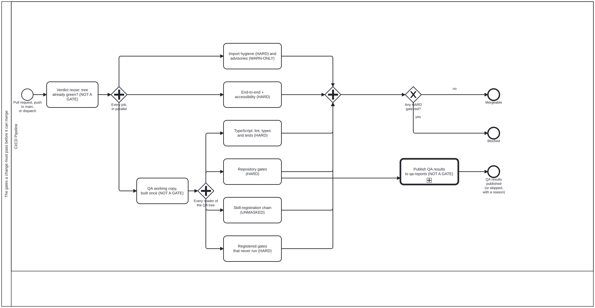

Generated from
cat-harness/processes/sdlc/code-quality-gates.bpmnbygen-processes-viz.ts— do not edit here. All processes
The gates a change must pass before it can merge
Process_CodeQualityGates · strict · 9 step(s)
The gates a change must pass before it can merge: the jobs of the code-quality workflow, each marked hard, warn-only or not a gate, joined by one question — did every hard one pass. EVERY GATE IS INDEPENDENT, AND NOTHING IN THE YAML SAYS SO IN ONE PLACE. Bean 7yvd. The file reads as a long sequence; it is not one. NO gate declares needs: on another GATE, so they all start together and the wall-clock cost of the gates is the SLOWEST job, not the sum. The needs: in the file are on jobs that are not gates: qa-publish (arc 3fva) waits for the corpus parts of gates whatever they concluded and stores the run’s QA results on the qa-reports branch, and nothing waits for it; and every job that READS the QA working copy waits for qa-working-copy (bean jtfk), which builds it once for the run instead of once per reader. That is the single most useful thing to know before adding a gate, and it is recoverable today only by checking for needs: keys that are not there. COUNT THE # bpmn-node: DECLARATIONS rather than trusting a number here: this paragraph said SIX until 2026-09-26, by which point there were eight — typescript had been split into typescript + gates and skill-registration-chain added — and the count was wrong in the one place a reader checks the shape.
THE ASYMMETRY IS THE OTHER HALF, AND IT IS THE PART THAT DOES NOT GO STALE. Exactly TWO gates report without blocking — the Rust wildcard report and the dependency advisories, both STEPS of the hygiene job since bean 7fu5 — and every other gate is HARD. (qa-publish blocks nothing either, but it is not a gate at all, so it is drawn off the join rather than counted here.) Stated that way round on purpose: the warn-only set is named and closed, so it stays true as jobs are added, whereas “four are hard” needed editing the moment a ninth gate existed. Drawing them as equal boxes would be a lie a reader would act on, so the warn-only gates are labelled as such and the gateway after the join asks specifically about the HARD ones.
THE TWO WARN-ONLY GATES ARE WARN-ONLY BY DIFFERENT MECHANISMS, AND THE DIFFERENCE IS THE POINT. The Rust step carries continue-on-error: true — the RUNNER discards its result. The advisories step carries no such flag: its script exits 0 in every state and keeps the three states apart in its OUTPUT instead. That is deliberate, because a warn-only step whose exit code says nothing has only its output left to distinguish found nothing from could not find out, and continue-on-error would have thrown away the one signal that still worked.
continue-on-error IS NOT A DEFAULT HERE, it is a decision that has been REVERSED once already: the Python import check carried it, and the flag swallowed a failure on a missing path, so the job reported success over a check that never ran. It was removed and a new unused import now fails. The flag STILL survives on exactly one step — adding a second warn-only gate did not add a second continue-on-error, which is the history being honoured rather than an oversight. Anyone reaching for the flag should read that paragraph first.
TypeScript IS ONE BOX STANDING FOR ROUGHLY THIRTY REPOSITORY GATES — workflow policy, AGENTS.md cross-references and claims, declared assets, workflow skill refs and BPMN coverage, the knowledge-graph audit, generated-docs currency, agent memory, and the ratchet that fails a check script no workflow runs. They are sequential only because one job runs them; each is independent, and bun run cat gates is the local runner derived from this job so a contributor can run the same set before pushing.
Mechanical throughout. Nothing here waits on a person, which is what makes build-pipeline the right lane rather than a convenient one.

How it connects
- Called by: A merge train
- Calls: Publish and keep QA results on qa-reports
- Presented on: no docs page section shows this diagram
Lanes — who acts
| lane | role | what it does here |
|---|---|---|
| CI/CD Pipeline | build-pipeline |
Joins every job before asking anything, then GW_Hard asks specifically about the HARD gates — the two warn-only results reach the same join but never the gate, so this lane’s merge/block call is deliberately blind to a red warn-only step it also ran. No count is given here on purpose: this paragraph carried “seven jobs, five hard” and then “six-and-four”, and each was wrong the next time a job was split or folded (beans om30, 7fu5). Count the # bpmn-node: lines in the workflow instead. |
Steps
Every one of the 9 step(s) is documented.
| step | lane | skill / sub-process | what it does |
|---|---|---|---|
Verdict reuse: tree already green? (NOT A GATE)Task_VerdictReuse |
CI/CD Pipeline | platform-gates |
Bean qbco, issue #2456 (owner, 2026-10-07: “1y, 2y, 3y, 4y”). On a PUSH to main only; on any other event it is skipped and nothing waits for it. A merge-button merge of an up-to-date PR carries a tree CI has already tested. verdict-reuse.sh looks up the runs of this workflow on the merged head (the merge commit’s second parent) and answers reuse=true only when one concluded success, ran every job a reuse would skip, and tested exactly this tree: for a pull_request run, the tested-tree: its Task_QaWorkingCopy job wrote into its check run’s summary; for a dispatch, the head’s own tree. Then the four bun test shards (part of Task_TypeScript), the three e2e shards (Task_E2E) and the standalone ratchet (part of Task_RepositoryGates) are skipped on this push, and the summary names the run whose verdict stands. Everything that judges the tree against main or reads qa-reports still runs. A squash, an API error, a missing record or a mismatch is reuse=false and every job runs: could-not-determine is never green. Drawn before the fork because the jobs it can skip wait for it; the others do not. Since the same ruling, a newer push to main also cancels an older main run still in progress (the workflow’s concurrency), so main’s verdict history is thinned by decision. |
QA working copy, built once (NOT A GATE)Task_QaWorkingCopy |
CI/CD Pipeline | qa-reports |
Bean jtfk, issue #2456. bun run qa:working-copy (bean 72a8) — the bootstrap kg-export, then every declared QA writer — used to run INSIDE each job that reads the QA tree, and qa-publish ran the same writers again: nine builds of one tree from one commit, measured at 2,284 of 4,714 runner-seconds (48 %) on run 37659324493. Now the qa-working-copy job builds it once and uploads everything the build changed as an artifact with a sha256 manifest; each reader downloads it, checks the manifest against the hash this job reported and every restored file against the manifest, and only then judges. An artifact rather than a cache, because a cache key built from less than the real inputs serves stale data; an artifact is per run and exact. It judges nothing, so it is not a gate and does not reach GW_Join; a failed build fails every reader at its first step (they run if: !cancelled()), never a skip. Drawn feeding GW_Readers, the four tasks that wait for it; within them typescript-static and gates-standalone read no QA tree and do not wait, and qa-publish waits for it as well as for Task_RepositoryGates. |
Import hygiene (HARD) and advisories (WARN-ONLY)Task_Hygiene |
CI/CD Pipeline | platform-gates |
FOUR QUESTIONS, ONE RUNNER — bean 7fu5. They were four jobs (lean-bare-import, python-imports, rust-wildcard, dependency-advisories), each about a second of work behind a ~13 s checkout and a runner request; measured on main run 37133247484 (2026-10-03), the run took 21.7 min while its longest job executed for 174 s, the rest waiting for runners. Now they are steps of the hygiene job, and every step after the first gate runs if: !cancelled(), so a red one masks none of the others — the om30 rule kept inside one job rather than by splitting it. (1) Lean, HARD: fail on any bare import Mathlib in content/*/.lean; in this platform repo there is no content/, so the step prints SKIP and states that nothing was scanned. (2) Python, HARD: ruff F401 (unused) and F403 (wildcard) over the Python trees that exist, then the Python tests; an absent tree is dropped rather than passed to ruff, and an empty set says SKIP. (3) Dependency advisories, WARN-ONLY by the owner’s ruling on bean j41m: is anything in the resolved tree KNOWN-VULNERABLE? The script exits 0 in every state and keeps them apart in its output; .github/dependabot.yml is the other half of that ruling and is not drawn here. (4) Rust wildcard imports, WARN-ONLY: report non-test use …::*; in tools/*/.rs; continue-on-error, and therefore the job’s LAST step, where it masks nothing. |
TypeScript: lint, types and tests (HARD)Task_TypeScript |
CI/CD Pipeline | platform-gates |
Three checks: bun run cat lint, tsc --noEmit and bun test. The repository gates it used to carry are Task_RepositoryGates now (bean om30). Since bean dlqu it is split across jobs: typescript-static (lint, then typecheck), typescript-test (bun test as four SEQUENTIAL shards on separate machines — Bun’s in-process --parallel worker pool hung at both 4 and 2 workers, measured — the shard passed in BUN_OPTIONS so the command stays the one bun run cat gates runs locally) each shard and typescript-static its own required check. A fourth job, typescript, carried one check name for all of them and was green only when the others succeeded; bean 5p4m (issue #2456) removed it — a runner request for ~1 s of work that waited minutes for a runner — so branch protection names the five checks directly. The step-order rule the single job needed — bun test LAST, because Actions stops at the first failing step and a red-by-decision test would otherwise mask lint and typecheck — no longer has anything to order: separate jobs cannot mask each other. Measured on three main runs before the change: bun test alone was 7m30s-7m45s of an 8m14s-8m33s job. |
End-to-end + accessibility (HARD)Task_E2E |
CI/CD Pipeline | platform-gates |
Install Chromium, check the rendered BPMN SVGs are current, then run the Playwright suite, which includes the accessibility checks. Hard: a failure blocks the PR. SHARDED since bean dlqu (drawn as one task, deliberately: a multi-instance marker would add a BPMN term to every instance’s UML overview, about 75 generated files, for a picture this sentence already gives): the suite runs as three e2e-shard jobs (E2E_SHARD=i/3, one Playwright worker per core in each), and each shard is its own required check, so a shard that failed, was cancelled or never ran is a red check of its own. Until bean 5p4m (issue #2456) an e2e job carried one check name for the three and completed the task only when every instance succeeded; it was ~1 s of work behind a runner request that waited minutes, and was removed. Measured before the split: playwright test alone was 4m33s of a 5m16s job, the workflow’s slowest once bun test ran in parallel. The BPMN-render and .bat-wrapper checks run in shard 1 only, so they are asked once. |
Repository gates (HARD)Task_RepositoryGates |
CI/CD Pipeline | platform-gates |
The 43 repository-gate steps — workflow refs, lane and process documentation, kg:audit:check, detangle, skills, published packages — 150 bun run invocations in all. A SEPARATE job from Task_TypeScript since bean om30: they were one job in which bun test came second of 47 steps, and because Actions stops a job at its first failing step and no step was continue-on-error, a deliberate test failure on main meant none of these ran. A gate never asked and a gate that passed are indistinguishable from outside, which is xom7 at the step rather than the workflow. No sequence dependency on Task_TypeScript is drawn because there is none: a red test must not stop these being asked. bun run cat gates derives its list from BOTH jobs, so the local set still cannot drift from CI’s. |
Registered gates that never run (HARD)Task_UnrunGates |
CI/CD Pipeline | platform-gates |
check:gates-registered, split out of Task_RepositoryGates by bean dlqu: one step of that job measured 1m46s-2m28s across four runs, the longest step in it by a factor of four, and a sequential job is as slow as the sum of its steps. In its own job it runs beside the rest rather than after them. It still asks the same question — is every gate a script registers actually run somewhere — and is still hard. It also carries bun run cat security:gate (bean ieum, owner 2026-10-07: “security check before release”): the security checks by name, plus third-party action SHA pinning outside staging-only workflows, as one step that merge-train’s gate call reaches. A blocking fail OR could-not-check fails the job. |
Skill-registration chain (UNMASKED)Task_SkillChain |
CI/CD Pipeline | platform-gates |
Runs the five --check commands that adding a skill stales, each on its own: gen-skill-docs, check:glossary, auto:docs:check, kg:audit:check, kg:detangle:check. CORRECTED 2026-09-26, after main split this workflow: the original justification is GONE. It read “the only place those five are read against the tree as checked out”, because at the time all six lived in one job behind bun test, which runs the kg-audit and detangle WRITERS and repaired two artefacts before their checks read them (bean ymsu). Task_RepositoryGates is now a separate job that runs all six and never runs bun test, so they are unmasked THERE. What survives is narrower and is the reason this is kept: one command a skill author runs (bun run cat skill:register) that regenerates and verifies the chain together, a committed QA sidecar saying which steps ran, and ONE named failure instead of six unrelated generated files — which is bean v625’s actual complaint. The unmasking argument belongs to Task_RepositoryGates now. Its first CI run earned the place: it went red on kg:detangle:check and the cause was kg-detangle.ts counting 1214 files of a gitignored node_modules/ as graph nodes — 1441 where a clean checkout computes 227, pinned in a committed sidecar. Not a step in front of bun test either: measured on main’s run 36234052354, a failing step SKIPS every step behind it, so a red there would turn one named failure into forty-five unevaluated ones. 13s, in parallel. Beans v625, fjwi. |
Publish QA results to qa-reports (NOT A GATE)Task_QaPublish |
CI/CD Pipeline | calls Publish and keep QA results on qa-reportsqa-reports |
Bean 16ei, arc 3fva. After Task_RepositoryGates, WHATEVER it concluded (needs: its two corpus parts, with always()), and after Task_QaWorkingCopy, whose copy it restores and publishes rather than building a second time (bean jtfk), qa:publish --github writes this run’s test/results trees to the orphan qa-reports branch: main/<sha>/ on a push to main, pr/<n>/<head-sha>/ on a same-repository PR (owner rulings D1, D3). A fork PR’s token is read-only, so it is skipped with a ::notice naming why. It does NOT reach GW_Join: a red publish is its own red and never decides mergeability, and the hard gates never wait on it. The only job here holding contents: write, which is also how bun run cat gates knows not to run it locally. A CALL ACTIVITY: the key derivation, the fork skip and the never--f retry loop are qa-publish.bpmn, which also draws the retention run that takes entries off the branch again. |
Decisions
Every one of the 1 decision(s) is documented.
| decision | what decides it | branches |
|---|---|---|
Any HARD gate red?GW_Hard |
Asked once every parallel gate has joined: did any gate marked HARD fail? no is mergeable; yes blocks the merge. Warn-only gates do not decide this branch. |
no → Mergeable yes → Blocked |